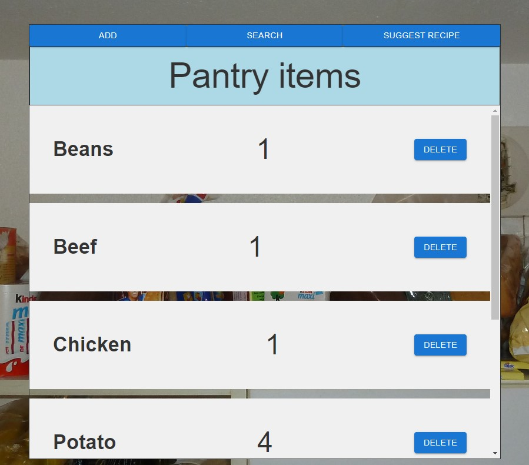

.jpg)
2024 William & Mary Computer Science graduate
Graduated cum laude, B.S. in Computer Science with a minor in math.
{kind=link}
Study Abroad in Florence
Explored new cultures during a winter study abroad in Florence, Italy.
Eagle Scout
{kind=link}
{kind=link}
Work Experience
Tile Worker – R. Bratti Associates | Summer 2020, 2021, Winter 2021
▪ Prepared floor tiles for contractors to lay at various D.C. area metro station sites
with some of the most notable projects being East Falls Church, West Falls
Church, Dunn Loring, and Greenbelt.
Courtesy Clerk - Giant grocery store | Summer 2019
▪ Bagged groceries/Carried groceries to the car for the elderly.
▪ Restocked items.
Project Showcase
{kind=link}

Pantry Tracker App
Created a NextJS web app that uses a firestore database to track items in the users pantry. The app has a search feature for easy lookup of items in the pantry, and allows the user to add and delete items in the pantry. This app integrates the Reflection70B AI from the OpenRouter API to suggest recipes to the user based on the items in the pantry. Users can also specify their desired style of cuisine for more targeted responses.
{kind=link}
Bitcoin Algorithmic Trading Project
Built upon an open-source project. Automated data collection and processing through web scraping and processing methods such as interpolation to fill in empty values. Used machine learning to explore different algorithms' abilities to predict the binary classification task of Bitcoin directional price movements over different time frames. Achieved over 86% accuracy on the dataset over the 30 day prediction interval, greatly exceeding the 57.9% of data that fell in the majority class.
Project Writeup
Programming language experience and skills
Experienced in Java, C, C++, and Python. Developed web apps using ReactJS, NodeJS and HTML. Some experience with XML, Y86 Assembly, Pascal, and Haskell. Experience with Machine Learning, Systems Programming, Network Systems, and Software Development. Some experience with Linux machines and Jupyter Notebook.
Resume
Contact info
Email: joseph_horner@outlook.com